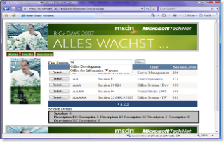

Last Monday I did a 2 hour nearly demo-only session at the technical university in Vienna to show some of the nitty-gritty details of ASP.NET AJAX. It was a more detailled version (especially in demos on the AJAX stuff) of the portal I created at our last Big Days road show. As the task was building a web site from scratch I started building this site with Expression Web designer and then completed it using Visual Studio ORCAS. Although - because still in early beta - ORCAS sometimes has some stability issues the roundtripping between these two worlds, Expression Web and ORCAS worked seamless although ORCAS ships with a new version of the AJAX Extensions integrated into the .NET Framework 3.5.
{kind=link}
Still the AJAX Extensions provide the same functionality as they do with the version available at http://ajax.asp.net - therefore I ported the web site back to work seamless with released-only technologies which aren't in beta. Attached to this posting you can find the samples and PowerPoint slides I presented at the university. The samples attached to this post can be opened with Visual Studio 2005 without any problems. Actually back-porting took me about 10 mins. incl. testing and setting up the database as a file-database using the freely available SQL Express so that you do not need to attach it to your SQL Server.
Required software to run the sample therefore is:
- Windows with .NET Framework 2.0
- ASP.NET AJAX Extensions and Toolkit
- Free SQL Server 2005 Express Edition
- Free Visual Studio 2005 Web Developer Express Edition with integrated development web server
Basically that's it (I know, developers from Microsoft field know these link above, but the presentation was given to primarily non-Microsoft focussed developers, so I spend some time summarizing the requirements more detailled:)).